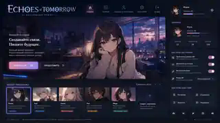
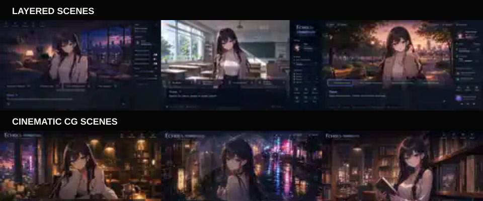

Visual Novel: Starting an AI Game That Breaks the Fourth Wall
I have started designing a new project at the boundary between an AI chat, a visual novel, and a stateful game. The core idea is simple: the player should not feel that they opened a dialogue window. They should feel that they entered a character's living space and continued a shared story.
Not another character chatbot
Most AI character products still inherit the structure of a messenger: a portrait, a stream of messages, and a text field. Images are usually decorative attachments. I want to reverse that hierarchy. The scene comes first, while dialogue becomes one of the ways to interact with it.
A character may remember previous visits, greet the player first, refer to shared events, move between locations, change clothing or mood, and offer contextual actions as interface buttons. Proactive behavior remains optional: the player can disable first messages, automatic location changes, long-term memory, visual updates, or generated choices.
The central object is not the message history. It is the current state of the scene.
Entering a room instead of opening a thread
When the player opens a character room, the application restores memory, relationships, the current location, time of day, outfit, mood, and unfinished events. During this preparation, the interface can show atmospheric streaming statuses instead of an empty loading screen.
If proactive dialogue is enabled, the opening line is generated from the character legend, the player's legend, and previous meetings. The greeting is not a fixed template. It can sound like: “You have not visited for a while,” or refer to what the character is doing at that moment.
Two visual modes for one continuous scene
The regular visual-novel mode uses independent layers: a reusable background, a character sprite with transparency, effects, dialogue, and choices. This makes common interactions fast and allows the location, pose, expression, and interface to change without regenerating the whole image.
For important, complex, or emotionally intense moments, the game switches to a cinematic mode. ComfyUI generates the character and environment as one coherent illustration. When that episode ends, the application returns to the layered scene without resetting the conversation or world state.

Generated choices without losing freedom
When a situation naturally has several possible responses, the system can show two to four generated actions. A character may ask where to go, what to do, or what outfit to choose. These controls reduce cognitive load and give the conversation the rhythm of a game.
The free text field never disappears. Buttons are suggestions, not rails. The player can always write a custom response or action.
A dialogue model is not enough
The project needs a scene director alongside the character voice. The model may propose dialogue, choices, events, memory candidates, and a structured scene_patch, but it does not mutate the world directly. A deterministic state manager validates the change and decides whether the frontend should replace a sprite, change the background, start a complete CG generation, or do nothing visual at all.
This separation should prevent familiar inconsistencies such as a character talking about a shop while the room still shows a kitchen, or changing clothes only in the text.
Music must remember the world too
While preparing the first visual concepts, another essential layer became obvious: music. The best examples I remember from games such as Epic Seven and the Final Fantasy series use music not merely to fill silence, but to give places, characters, and events their own identity.
The project will therefore treat music, ambience, interface sounds, and future character voice as parts of the scene state. A character theme may have daytime, evening, calm, romantic, tense, and cinematic variations while preserving the same recognizable motif.
The compositions can be produced with Suno, local music generators, a DAW, and manual arrangement. Generation is a production tool, not a runtime dependency: selected and edited tracks become normal game assets with loop points, stems, metadata, and clear licensing.
Local, hybrid, and cloud execution
The same game core should support three execution models:
- Local: the language model, ComfyUI, memory, and assets run on the player's computer.
- Hybrid: individual components can be routed independently, for example local chat with cloud image generation.
- Cloud: remote inference is paid according to actual usage.
The desktop and Steam version is the natural primary target because a large scene, local models, long stories, and a game-like interface reveal the idea better than a narrow browser chat. A web version remains possible because the client can combine a DOM interface with Canvas or WebGL rendering.
Three development phases
- MVP: one convincing character, a polished interface, several locations, interactive choices, memory, layered and cinematic modes, and a small but coherent soundtrack.
- Game and visual engine: a full scene director, wardrobe, schedules, events, several characters, richer memory, asset caching, dynamic music, and expanded ComfyUI workflows.
- Public release: desktop/Steam and web distribution, authentication where needed, payments for cloud computation, Docker infrastructure, licensing, privacy, and operational reliability.
Current status
The implementation has not yet reached the playable MVP. At this stage I have prepared the project structure, product and subsystem manifestos, documentation workflow, visual direction, scene concepts, and the first audio principles. The next step is targeted research and small prototypes before fixing the final stack in a plan and implementation checklist.
The documentation is available in the Visual Novel repository. I will publish further architectural decisions and working fragments as the project develops.
Visual Novel: начинаю разработку AI-игры, которая ломает четвёртую стену
Я приступил к проектированию нового проекта на границе AI-чата, визуальной новеллы и игры с постоянным состоянием. Основная идея проста: пользователь не должен чувствовать, что открыл окно переписки. Он должен чувствовать, что вошёл в живое пространство персонажа и продолжил общую историю.
Не очередной чат с персонажем
Большинство приложений для общения с AI-персонажами всё ещё наследуют структуру мессенджера: портрет, лента сообщений и поле ввода. Изображения обычно остаются декоративными вложениями. Здесь я хочу перевернуть эту иерархию. На первом месте находится сцена, а диалог становится одним из способов взаимодействия с ней.
Персонаж сможет помнить прошлые посещения, встречать пользователя первым, ссылаться на общие события, перемещаться между локациями, менять одежду или настроение и предлагать уместные действия в виде кнопок. Проактивность останется управляемой: можно будет отдельно отключить первые сообщения, автоматические переходы, долговременную память, визуальные обновления и варианты выбора.
Центральный объект системы — не история сообщений, а текущее состояние сцены.
Вход в комнату вместо открытия треда
При входе в комнату персонажа приложение восстанавливает память, отношения, текущую локацию, время суток, одежду, настроение и незавершённые события. Пока это происходит, интерфейс может показывать атмосферные потоковые статусы вместо пустого экрана загрузки.
Если проактивный диалог включён, первая реплика генерируется на основе легенды персонажа, легенды пользователя и прошлых встреч. Это не заготовленное приветствие. Персонаж сможет заметить, что пользователь давно не заходил, или рассказать, чем занят именно сейчас.
Два визуальных режима одной непрерывной сцены
Обычный режим визуальной новеллы использует независимые слои: повторно используемый фон, персонажа с прозрачностью, эффекты, диалог и варианты выбора. Это позволяет быстро менять локацию, позу, эмоцию и интерфейс, не перегенерируя весь кадр.
Для важных, сложных или эмоционально насыщенных моментов игра переключается в cinematic-режим. ComfyUI генерирует персонажа и окружение как единую согласованную иллюстрацию. После завершения эпизода приложение возвращается к составной сцене, не сбрасывая диалог и состояние мира.
Сгенерированный выбор без потери свободы
Когда ситуация естественно допускает несколько вариантов, система сможет показать от двух до четырёх сгенерированных действий. Персонаж может спросить, куда пойти, что сделать или какой наряд выбрать. Такие элементы снижают когнитивную нагрузку и придают разговору игровой ритм.
Свободный ввод при этом не исчезает. Кнопки являются предложениями, а не рельсами. Пользователь всегда может написать собственную реплику или действие.
Одной диалоговой модели недостаточно
Помимо голоса персонажа проекту нужен режиссёр сцены. Модель может предлагать реплику, варианты, события, кандидаты в память и структурированный scene_patch, но не должна напрямую менять мир. Детерминированный менеджер состояния проверяет изменение и решает, нужно ли заменить спрайт, сменить фон, запустить цельную CG-генерацию или вообще не обновлять визуал.
Такое разделение должно предотвращать привычные рассинхроны, когда персонаж рассказывает о магазине на фоне кухни или меняет одежду только в тексте.
Музыка тоже должна помнить мир
Во время подготовки первых визуальных концептов проявился ещё один обязательный слой: музыка. Самые удачные примеры, которые мне вспоминаются в Epic Seven и серии Final Fantasy, используют музыку не для заполнения тишины, а для создания идентичности мест, персонажей и событий.
Поэтому музыка, ambience, интерфейсные звуки и будущий голос персонажа будут частью состояния сцены. У темы персонажа могут быть дневная, вечерняя, спокойная, романтическая, напряжённая и cinematic-вариации, сохраняющие один узнаваемый мотив.
Композиции можно производить через Suno, локальные музыкальные генераторы, DAW и ручную аранжировку. Генерация здесь является инструментом производства, а не runtime-зависимостью: отобранные и доработанные треки становятся обычными ассетами игры с loop-точками, stems, метаданными и понятной лицензией.
Локальный, гибридный и облачный запуск
Одно игровое ядро должно поддерживать три модели выполнения:
- Local: языковая модель, ComfyUI, память и ассеты работают на компьютере пользователя.
- Hybrid: отдельные компоненты маршрутизируются независимо, например локальный чат и облачная генерация изображений.
- Cloud: удалённые вычисления оплачиваются по фактическому использованию.
Desktop и Steam выглядят естественной основной целью: большая сцена, локальные модели, длинные истории и игровой интерфейс раскрывают идею лучше узкого браузерного чата. Web-версия тоже остаётся возможной, потому что клиент может сочетать DOM-интерфейс с Canvas или WebGL.
Три фазы разработки
- MVP: один убедительный персонаж, законченный интерфейс, несколько локаций, интерактивный выбор, память, составной и cinematic-режимы, небольшой связный саундтрек.
- Игровой и визуальный движок: полноценный режиссёр сцены, гардероб, расписание, события, несколько персонажей, расширенная память, кэш ассетов, динамическая музыка и дополнительные ComfyUI workflow.
- Публичный выпуск: desktop/Steam и web, авторизация там, где она нужна, оплата облачных вычислений, Docker-инфраструктура, лицензирование, приватность и эксплуатационная надёжность.
Текущий статус
Реализация пока не дошла до игрового MVP. Сейчас подготовлены структура проекта, продуктовый и подсистемные манифесты, порядок ведения документации, визуальное направление, концепты сцен и первые принципы аудиосистемы. Следующий шаг — целевая разведка решений и небольшие прототипы, после которых можно будет зафиксировать стек в плане и перевести его в чеклист реализации.
Документация доступна в репозитории Visual Novel. По мере развития проекта я буду публиковать следующие архитектурные решения и рабочие фрагменты.